Setting up
For this lab, we’ll use a few different packages for data and analysis. We’re going to use the ison_m182 dataset again, directly from the package.
suppressPackageStartupMessages(library(migraph)) # note that you may need a special version for what follows...
data("ison_m182", package = "migraph")The network is anonymous, but I think it would be nice to add some names, even if it’s just pretend. Luckily, I’ve added a function for this. This makes plotting the network just a wee bit more accessible:
ison_m182 <- to_named(ison_m182)
autographr(ison_m182)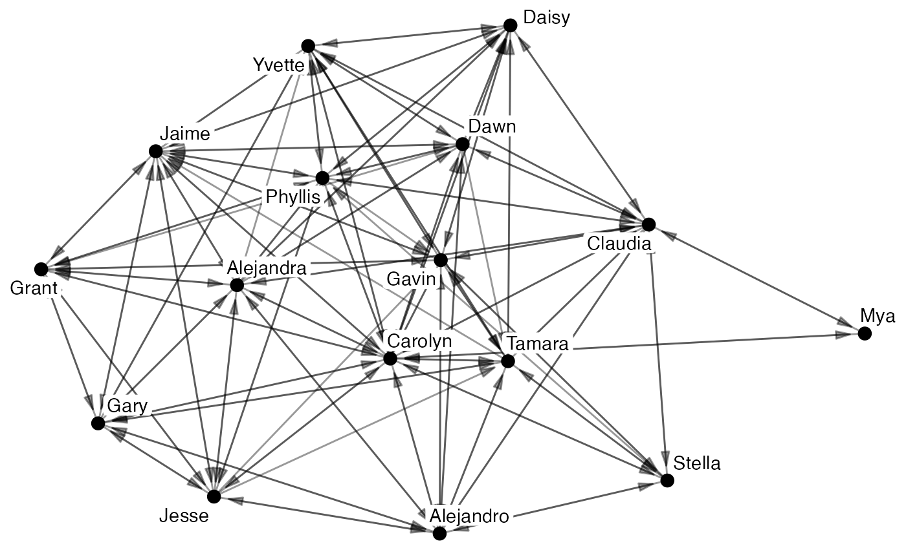
There are actually three different types of tie here. Let’s separate them out into separate networks.
(m182_friend <- to_uniplex(ison_m182, "friend_tie"))
#> # A tbl_graph: 16 nodes and 62 edges
#> #
#> # A directed simple graph with 3 components
#> #
#> # Node Data: 16 × 1 (active)
#> name
#> <chr>
#> 1 Malachi
#> 2 Mia
#> 3 Jessica
#> 4 Marianne
#> 5 Nora
#> 6 Archie
#> # … with 10 more rows
#> #
#> # Edge Data: 62 × 3
#> from to weight
#> <int> <int> <dbl>
#> 1 2 1 1
#> 2 2 7 1
#> 3 2 8 1
#> # … with 59 more rows
gfriend <- autographr(m182_friend) + ggtitle("Friendship")
(m182_social <- to_uniplex(ison_m182, "social_tie"))
#> # A tbl_graph: 16 nodes and 129 edges
#> #
#> # A directed simple graph with 1 component
#> #
#> # Node Data: 16 × 1 (active)
#> name
#> <chr>
#> 1 Malachi
#> 2 Mia
#> 3 Jessica
#> 4 Marianne
#> 5 Nora
#> 6 Archie
#> # … with 10 more rows
#> #
#> # Edge Data: 129 × 3
#> from to weight
#> <int> <int> <dbl>
#> 1 1 5 1.2
#> 2 1 8 0.15
#> 3 1 9 2.85
#> # … with 126 more rows
gsocial <- autographr(m182_social) + ggtitle("Social")
(m182_task <- to_uniplex(ison_m182, "task_tie"))
#> # A tbl_graph: 16 nodes and 88 edges
#> #
#> # A directed simple graph with 1 component
#> #
#> # Node Data: 16 × 1 (active)
#> name
#> <chr>
#> 1 Malachi
#> 2 Mia
#> 3 Jessica
#> 4 Marianne
#> 5 Nora
#> 6 Archie
#> # … with 10 more rows
#> #
#> # Edge Data: 88 × 3
#> from to weight
#> <int> <int> <dbl>
#> 1 1 5 0.3
#> 2 1 9 0.3
#> 3 1 10 0.3
#> # … with 85 more rows
gtask <- autographr(m182_task) + ggtitle("Task")
grid.arrange(gfriend, gsocial, gtask, ncol = 3)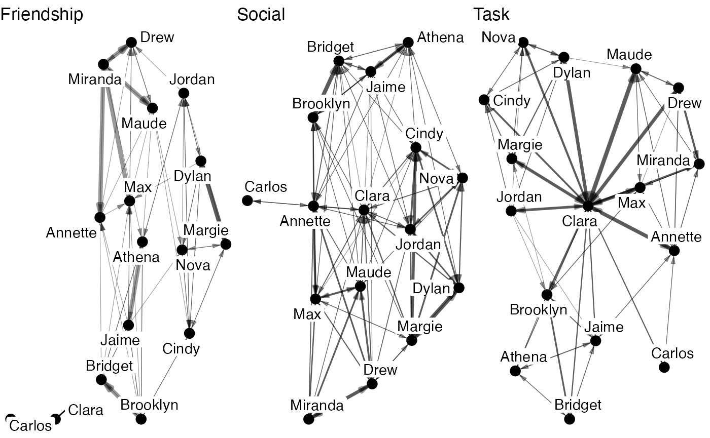
Structural Holes and Constraint
Where might innovation be most likely to occur in these networks? Let’s take a look at which actors are least constrained by their position in the task network to begin with. migraph makes this easy enough with the node_constraint() function.
node_constraint(m182_task)
#> Malachi Mia Jessica Marianne Nora Archie Shawn Eva
#> 0.9296725 0.8770476 0.6636775 0.9867478 0.6107876 0.6090524 0.8995527 0.8935226
#> Rickey Otto Carrie Gregory Ernest Cassandra Bill Chase
#> 0.8916714 0.8954317 0.7044446 0.8114632 0.8643100 0.9072766 0.9571695 0.1462941We see that this function returns a vector of constraint scores that can range between 0 and 1. Let’s size the nodes according to this score, and identify the node with the minimum constraint score.
ggidentify(m182_task, node_constraint, min)
#> Using `stress` as default layout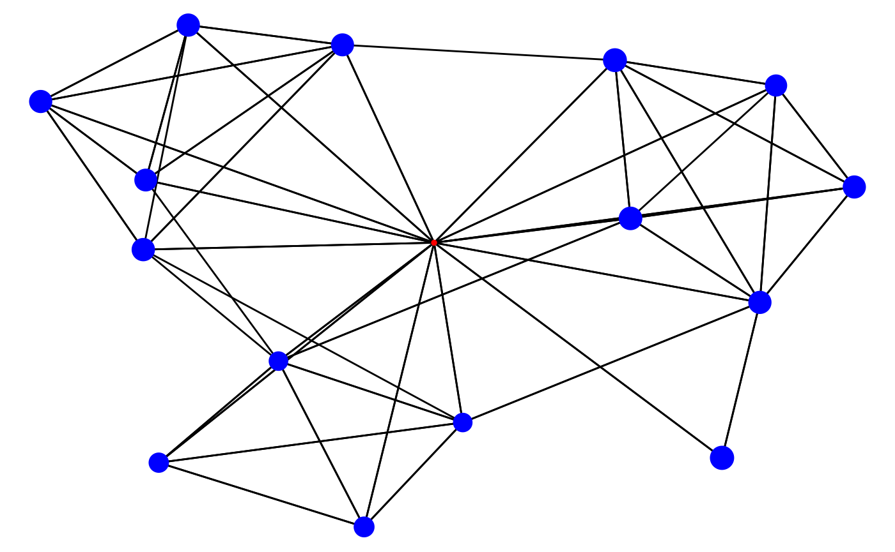
Why minimum? And what can we learn from this plot about where innovation might occur within this network?
Structural Equivalence
Now we are going to identify and interpret the roles or relations between a set of structurally equivalent positions. We’re going to identify structurally equivalent positions across all the data that we have, including ‘task’, ‘social’ and ‘friend’ ties, but the unit test this week will ask you to run this on a uniplex version of this network.
Constructing a multiplex matrix
Ok, so to begin with we need to obtain the profiles that we are going to correlate to identify same/similar positions. For structural equivalence, we can start with a census of all the outgoing and incoming ties to reveal their tie partners.
dim(node_tie_census(ison_m182))
#> [1] 16 96
head(structural_combo <- node_tie_census(ison_m182))[,c(1,17,33,49,65,81)]
#> fromMalachi toMalachi fromMalachi toMalachi fromMalachi toMalachi
#> Malachi 0 0 0.0 0.0 0.0 0.0
#> Mia 0 1 0.0 0.0 0.0 0.0
#> Jessica 0 0 0.0 0.0 0.0 0.0
#> Marianne 0 0 0.0 0.0 0.0 0.0
#> Nora 0 1 1.2 1.2 0.3 0.3
#> Archie 0 1 0.0 0.0 0.0 0.0We can see that the result is a matrix of 16 rows and 96 columns, because we want to catalogue or take a census of all the different incoming/outgoing partners our 16 nodes might have across these three networks. Note also that the result is a weighted matrix; what would you do if you wanted it to be binary?
Calculating structural (dis)similarity
The next step, once we have our data (the tie census), is to cluster nodes by their equivalence. In summary, we’re going to hierarchically cluster the nodes based on the distances in dissimilarity in their outgoing and incoming ties. Or you can just run the following line:
(str_res <- cluster_structural_equivalence(ison_m182))
#>
#> Call:
#> stats::hclust(d = distances)
#>
#> Cluster method : complete
#> Number of objects: 16This object doesn’t tell us much, but we can investigate it more using migraph’s ggtree(). This is a dendrogram of the hierarchical clustering object. Basically, as we move to the right, we’re allowing for more and more dissimilarity among those we cluster together. A fork or branching point indicates the level of dissimilarity at which those two or more nodes would be said to be equivalent.
ggtree(str_res)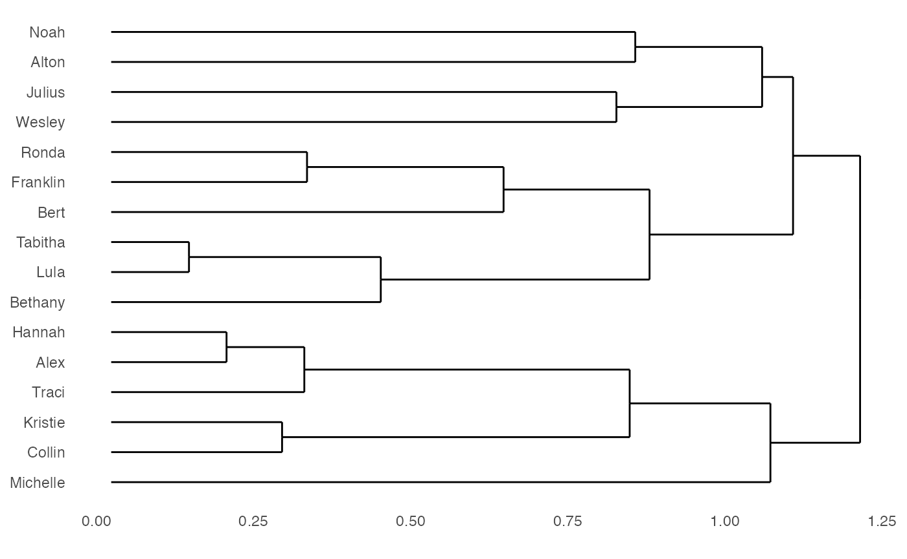
ggtree(str_res, 2) # for example let's say there are just two main clusters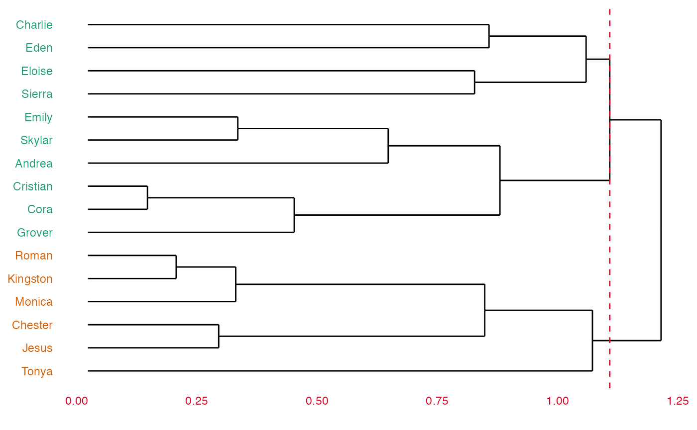
ggtree(str_res, 4) # or four? what are we seeing here?
Ok, so we can draw a line and this establishes how many clusters we have (or vice versa), but also which nodes belong to which cluster. But how many clusters should we pick?
Identifying number of clusters
To establish that, we need to iterate through all of our options, calculating for each how correlated this pattern is with the observed network. We then plot this and, using the “elbow method”, decide how many clusters.
ggidentify_clusters(str_res, structural_combo)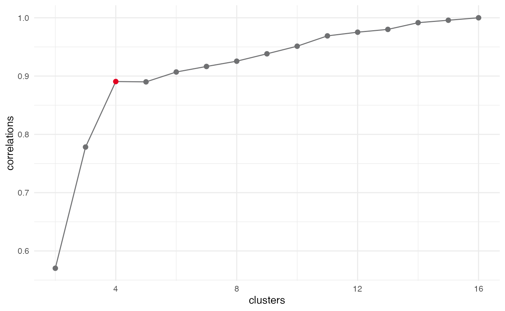
When there is one cluster for each vertex in the network, cell values will be identical to the observed correlation matrix, and when there is one cluster for the whole network, the values will all be equal to the average correlation across the observed matrix. So the correlations in each by-cluster matrix are correlated with the observed correlation matrix to see how well each by-cluster matrix fits the data.
Ok, so it looks here as if there is a clear bend in the elbow/knee at four clusters. This is reasonably parsimonious and well-fitting. More clusters than this only distinguishes nodes that are less dissimilar.
We can use cutree() to cut the tree at our desired point and return the resulting vector of cluster assignments.
(str_clu <- cutree(str_res, 4))
#> Malachi Mia Jessica Marianne Nora Archie Shawn Eva
#> 1 2 3 1 3 3 2 2
#> Rickey Otto Carrie Gregory Ernest Cassandra Bill Chase
#> 1 1 3 1 2 2 1 4This we can use for various things. Most immediately, we may wish to see these cluster assignments mapped onto our networks. All we need to do is add the variable to existing networks and plot them:
m182_task <- m182_task %>% as_tidygraph() %>% mutate(clu = str_clu)
autographr(m182_task, node_color = "clu") + ggtitle("Task")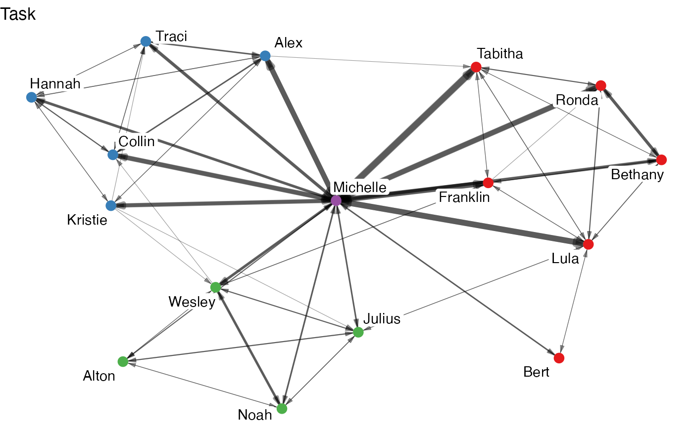
m182_social <- m182_social %>% as_tidygraph() %>% mutate(clu = str_clu)
autographr(m182_social, node_color = "clu") + ggtitle("Social")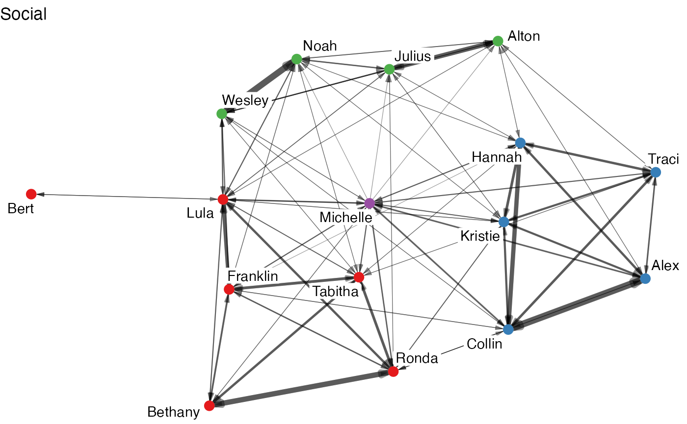
m182_friend <- m182_friend %>% as_tidygraph() %>% mutate(clu = str_clu)
autographr(m182_friend, node_color = "clu") + ggtitle("Friend")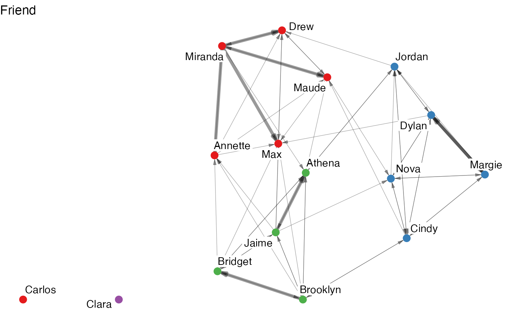
Blockmodelling
Now we can use the 4-cluster solution to generate blockmodels. We’ll do this on the valued network, but binary is possible too.
(task_blockmodel <- blockmodel(m182_task, str_clu))
#>
#> Network Blockmodel:
#>
#> Block membership:
#>
#> Malachi Shawn Gregory Mia Ernest Cassandra Eva Rickey
#> 1 2 3 1 3 3 2 2
#> Jessica Marianne Bill Nora Otto Carrie Archie Chase
#> 1 1 3 1 2 2 1 4
#>
#> Reduced form blockmodel:
#>
#> Malachi Mia Jessica Marianne Nora Archie Shawn Eva Rickey Otto Carrie Gregory Ernest Cassandra Bill Chase
#> Block 1 Block 2 Block 3 Block 4
#> Block 1 0.36000 0.0000 0.0250 4.1500
#> Block 2 0.00500 0.4050 0.0150 3.5400
#> Block 3 0.01875 0.0075 0.6625 1.0125
#> Block 4 4.12500 3.3900 1.3875 NaN
plot(task_blockmodel)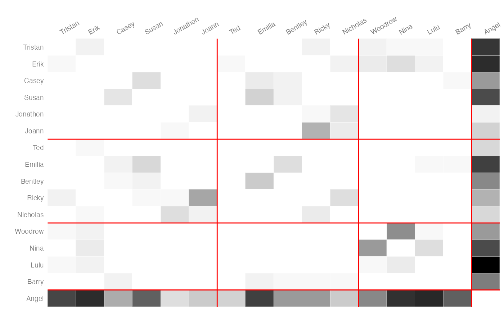
(social_blockmodel <- blockmodel(m182_social, str_clu))
#>
#> Network Blockmodel:
#>
#> Block membership:
#>
#> Malachi Shawn Gregory Mia Ernest Cassandra Eva Rickey
#> 1 2 3 1 3 3 2 2
#> Jessica Marianne Bill Nora Otto Carrie Archie Chase
#> 1 1 3 1 2 2 1 4
#>
#> Reduced form blockmodel:
#>
#> Malachi Mia Jessica Marianne Nora Archie Shawn Eva Rickey Otto Carrie Gregory Ernest Cassandra Bill Chase
#> Block 1 Block 2 Block 3 Block 4
#> Block 1 2.83500 0.1000 0.2250 1.250
#> Block 2 0.09500 5.2875 0.0825 1.920
#> Block 3 0.24375 0.0750 4.5750 0.075
#> Block 4 0.92500 1.2000 0.3375 NaN
plot(social_blockmodel)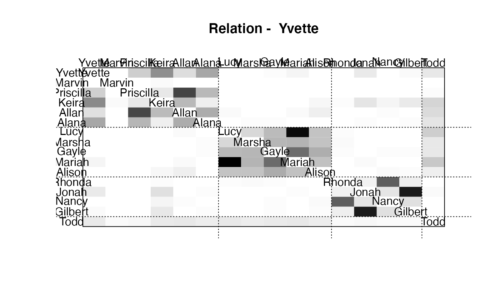
(friend_blockmodel <- blockmodel(m182_friend, str_clu))
#>
#> Network Blockmodel:
#>
#> Block membership:
#>
#> Malachi Shawn Gregory Mia Ernest Cassandra Eva Rickey
#> 1 2 3 1 3 3 2 2
#> Jessica Marianne Bill Nora Otto Carrie Archie Chase
#> 1 1 3 1 2 2 1 4
#>
#> Reduced form blockmodel:
#>
#> Malachi Mia Jessica Marianne Nora Archie Shawn Eva Rickey Otto Carrie Gregory Ernest Cassandra Bill Chase
#> Block 1 Block 2 Block 3 Block 4
#> Block 1 0.6000000 0.03333333 0.04166667 0
#> Block 2 0.1000000 1.00000000 0.10000000 0
#> Block 3 0.3333333 0.15000000 1.16666667 0
#> Block 4 0.0000000 0.00000000 0.00000000 NaN
plot(friend_blockmodel)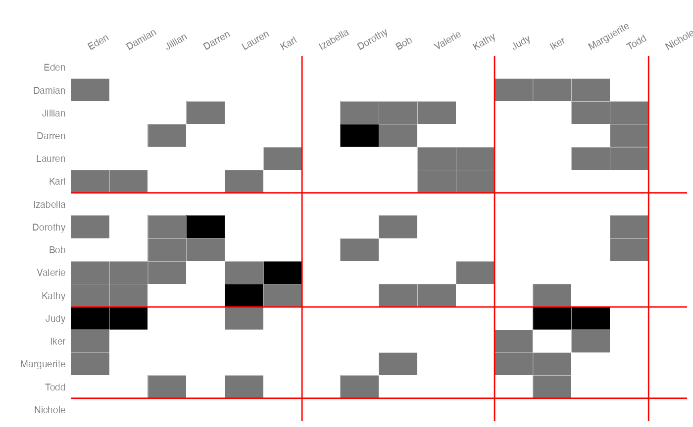
What do these plots show? Plotting the blockmodel like this is particularly useful for characterising what the profile of ties (partners) is for each position/equivalence class. We might characterise them like so:
- Malachi, Marianne, Rickey, Otto, Gregory, Bill work together only in reciprocal pairs on tasks, preferring to approach Chase but also those of the other two roles. While they hang out with each other socially quite a bit, friendship from groups 2 and 3 are preferred. We shall call them freaks.
- Mia, Shawn, Eva, Ernest, Cassandra also work together only in reciprocal pairs, preferring to work collaboratively with group 1 or also Chase. They also tend to count those from group 1 as friends, and hang out with everyone else but themselves. We shall call them squares.
- Jessica, Nora, Archie, Carrie will work with either some in group 1 and 3, or 2, but again prefer Chase for task advice. They are pretty good friends with each other though, and pretty happy to socialise with everyone. We shall call them nerds.
- Chase is a loner, no friends, but everyone hangs out with them for task advice, therefore the geek.
Reduced graph
Finally, we can reduce the graph to just interactions between roles. Let’s start off by graphing the valued/weighted blockmodel.
group_labels <- c("Freaks","Squares","Nerds","Geek")
(social_reduced <- reduce_graph(social_blockmodel, group_labels))
#> IGRAPH c9747f7 DNW- 4 15 --
#> + attr: name (v/c), weight (e/n)
#> + edges from c9747f7 (vertex names):
#> [1] Freaks ->Freaks Freaks ->Squares Freaks ->Nerds Freaks ->Geek
#> [5] Squares->Freaks Squares->Squares Squares->Nerds Squares->Geek
#> [9] Nerds ->Freaks Nerds ->Squares Nerds ->Nerds Nerds ->Geek
#> [13] Geek ->Freaks Geek ->Squares Geek ->Nerds
autographr(social_reduced)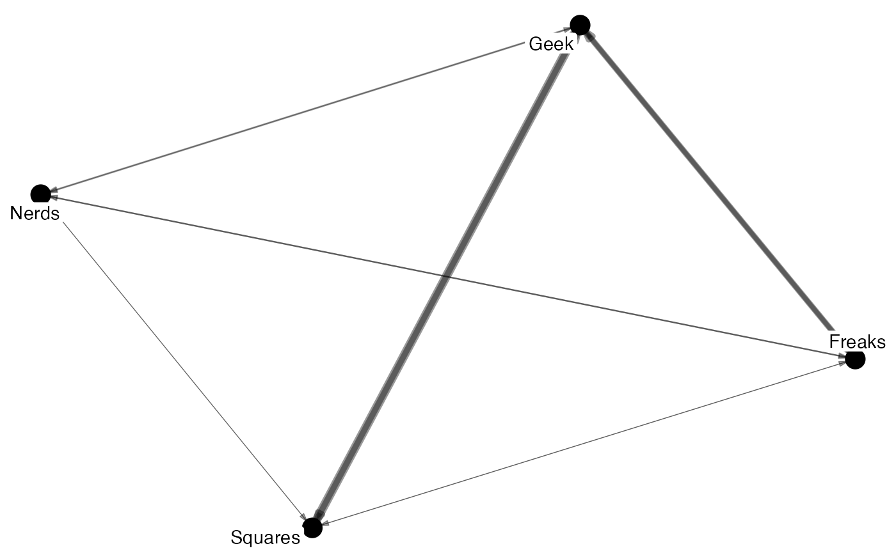
(task_reduced <- reduce_graph(task_blockmodel, group_labels))
#> IGRAPH b8285a1 DNW- 4 14 --
#> + attr: name (v/c), weight (e/n)
#> + edges from b8285a1 (vertex names):
#> [1] Freaks ->Freaks Freaks ->Nerds Freaks ->Geek Squares->Freaks
#> [5] Squares->Squares Squares->Nerds Squares->Geek Nerds ->Freaks
#> [9] Nerds ->Squares Nerds ->Nerds Nerds ->Geek Geek ->Freaks
#> [13] Geek ->Squares Geek ->Nerds
autographr(task_reduced)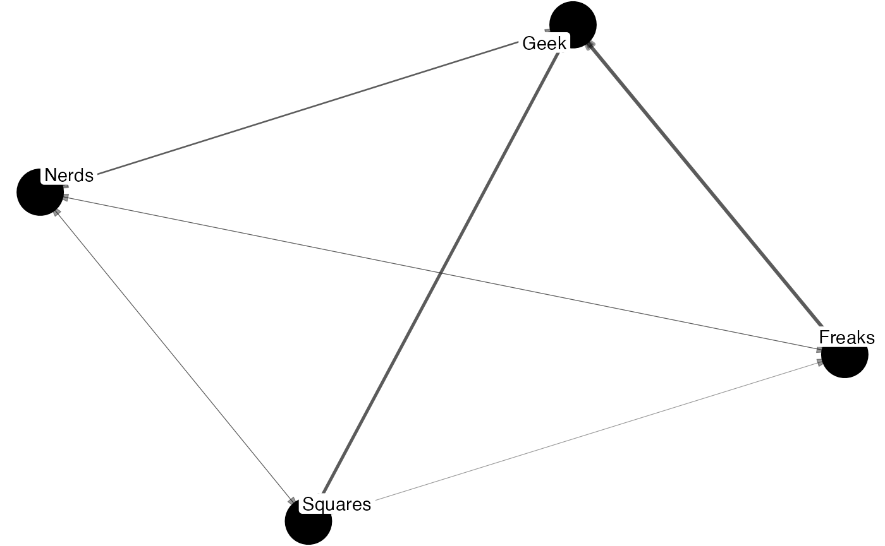
(friend_reduced <- reduce_graph(friend_blockmodel, group_labels))
#> IGRAPH cb38a66 DNW- 4 9 --
#> + attr: name (v/c), weight (e/n)
#> + edges from cb38a66 (vertex names):
#> [1] Freaks ->Freaks Freaks ->Squares Freaks ->Nerds Squares->Freaks
#> [5] Squares->Squares Squares->Nerds Nerds ->Freaks Nerds ->Squares
#> [9] Nerds ->Nerds
autographr(friend_reduced)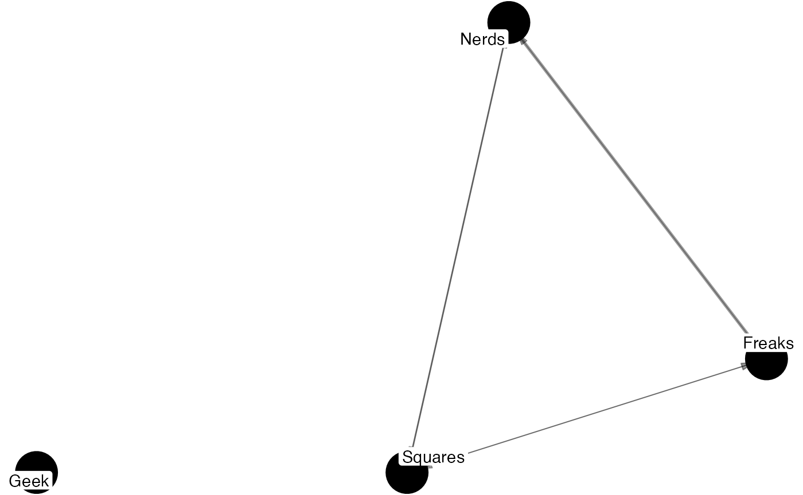
What can help interpreting these profiles is getting the summaries of average weight ties by group.
group_tie_census(m182_task, str_clu)
#> fromMalachi fromMia fromJessica fromMarianne fromNora fromArchie
#> Block 1 0.15 0.02 0.00 0.02 0.05 0.02
#> Block 2 0.00 0.42 0.00 0.00 0.03 0.00
#> Block 3 0.07 0.00 0.26 0.00 0.75 0.38
#> Block 4 5.10 4.80 0.30 0.90 1.80 0.90
#> fromShawn fromEva fromRickey fromOtto fromCarrie fromGregory fromErnest
#> Block 1 0.00 0.00 0.55 0.30 0.00 0.6 0.00
#> Block 2 0.33 0.33 0.00 0.00 0.00 0.0 0.39
#> Block 3 0.00 0.00 0.00 0.07 0.60 0.0 0.00
#> Block 4 2.85 2.40 2.40 5.40 1.05 4.5 4.50
#> fromCassandra fromBill fromChase toMalachi toMia toJessica toMarianne
#> Block 1 0.00 0.17 4.12 0.07 0.0 0.00 0.02
#> Block 2 0.15 0.00 3.39 0.00 0.6 0.00 0.00
#> Block 3 0.07 0.00 1.39 0.07 0.0 0.26 0.00
#> Block 4 3.15 6.60 0.00 4.65 4.8 0.75 1.05
#> toNora toArchie toShawn toEva toRickey toOtto toCarrie toGregory
#> Block 1 0.05 0.05 0.0 0.00 0.55 0.25 0.00 0.68
#> Block 2 0.03 0.03 0.3 0.27 0.00 0.00 0.00 0.00
#> Block 3 0.60 0.45 0.0 0.00 0.00 0.04 0.68 0.00
#> Block 4 2.40 1.20 2.4 1.95 2.85 5.40 1.20 5.25
#> toErnest toCassandra toBill toChase
#> Block 1 0.00 0.00 0.22 4.15
#> Block 2 0.39 0.06 0.03 3.54
#> Block 3 0.04 0.00 0.00 1.01
#> Block 4 3.90 3.90 5.55 0.00# ADVANCED: Note on deductive clustering:
# It's pretty straightforward to alter the code above to test hypotheses.
# Simply supply your own cluster vector, where the elements in the vector are in
# the same order as the vertices in the matrix, and the values represent the
# cluster to which each vertex belongs.
task_social_cors <- cor(task_social)
# For example, if you believed that actors 2, 7, and 8 formed one group,
# actor 16 former another group, and everyone else formed a third group,
# you could represent this as follows:
dedclust = c(1, 2, 1, 1, 1, 1, 2, 2, 1, 1, 1, 1, 1, 1, 1, 3)
# Then examine the fitness of this cluster configuration as follows:
dedclust_mat <- NetCluster::generate_cluster_cor_mat(task_social_cors, dedclust)
dedclust_mat
gcor(dedclust_mat, task_social_cors)Regular Equivalence
Constructing a triad census
We’re going to use the same pair of networks as with structural equivalence. But this time we’re not going to get the correlation of ties, but rather the correlation of profiles/patterns of local configurations. How can we identify patterns of local configurations? We’ll measure these profiles in terms of triad counts.
Now, there is a function for calculating triad censuses:
(graph_triad_census(m182_task))
#> 003 012 102 021D 021U 021C 111D 111U 030T 030C 201 120D 120U 120C 210 300
#> 133 38 212 2 0 1 14 13 0 0 93 1 0 0 11 42But as you can see, it just gives a aggregated tally for the whole network and not one differentiated by actor (which is what we need). Fortunately, migraph offers a node-level triad census too.
# (By putting parentheses around this command, it'll assign AND print!)
(task_triads <- node_triad_census(m182_task))
#> 003 012 102 021D 021U 021C 111D 111U 030T 030C 201 120D 120U 120C 210
#> Malachi 36 9 45 0 0 0 0 1 0 0 3 0 0 0 4
#> Mia 45 10 38 0 0 0 1 1 0 0 1 0 0 0 3
#> Jessica 55 0 44 0 0 0 0 0 0 0 0 0 0 0 0
#> Marianne 102 0 3 0 0 0 0 0 0 0 0 0 0 0 0
#> Nora 55 0 37 0 0 0 2 1 0 0 4 0 0 0 0
#> Archie 65 19 10 0 0 0 5 0 0 0 3 1 0 0 2
#> Shawn 91 1 13 0 0 0 0 0 0 0 0 0 0 0 0
#> Eva 91 1 13 0 0 0 0 0 0 0 0 0 0 0 0
#> Rickey 90 1 14 0 0 0 0 0 0 0 0 0 0 0 0
#> Otto 86 1 18 0 0 0 0 0 0 0 0 0 0 0 0
#> Carrie 95 0 10 0 0 0 0 0 0 0 0 0 0 0 0
#> Gregory 90 1 14 0 0 0 0 0 0 0 0 0 0 0 0
#> Ernest 93 1 11 0 0 0 0 0 0 0 0 0 0 0 0
#> Cassandra 90 3 12 0 0 0 0 0 0 0 0 0 0 0 0
#> Bill 88 2 15 0 0 0 0 0 0 0 0 0 0 0 0
#> Chase 0 0 0 0 0 0 0 0 0 0 73 0 0 0 6
#> 300
#> Malachi 7
#> Mia 6
#> Jessica 6
#> Marianne 0
#> Nora 6
#> Archie 0
#> Shawn 0
#> Eva 0
#> Rickey 0
#> Otto 0
#> Carrie 0
#> Gregory 0
#> Ernest 0
#> Cassandra 0
#> Bill 0
#> Chase 26Can you recall what these MAD codes mean? MAN might be easier to remember, for NULL dyads is the last, but MAD is probably more appropriate. ?igraph::triad.census can be used to check what each of the MAD codes means.
As with the structural equivalence, we can simply run our function and return an object that has hierarchically clustered our nodes, but this time it will be based on their (dis)similarity from each others patterns of ties.
reg_res <- cluster_regular_equivalence(m182_task)
ggtree(reg_res,4)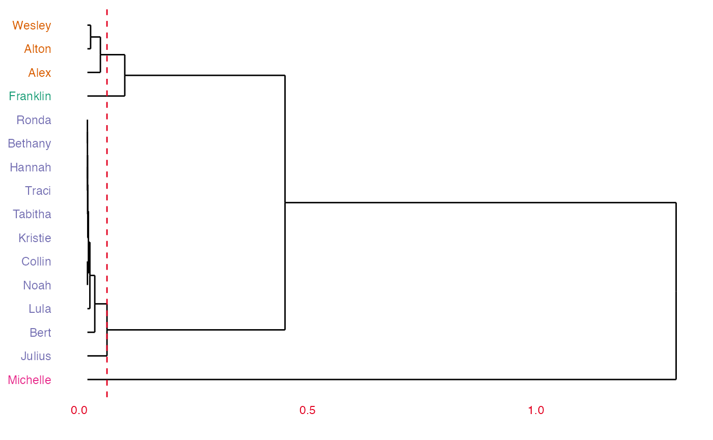
Ok, so it looks like these nodes are much more similar in terms of their patterns of ties than their actual ties.
Like before, we’ll loop through each possible cluster solution and see how well they match the observed matrix of triad type correlations.
ggidentify_clusters(reg_res, task_triads)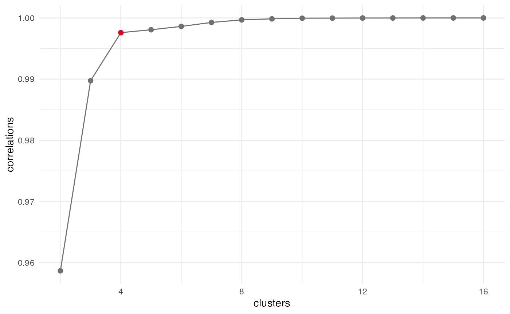
The cluster correlation plot seems a bit ambiguous here, at least visually. But the elbow method has highlighted 2 clusters as a pretty good solution.
ggtree(reg_res, 2)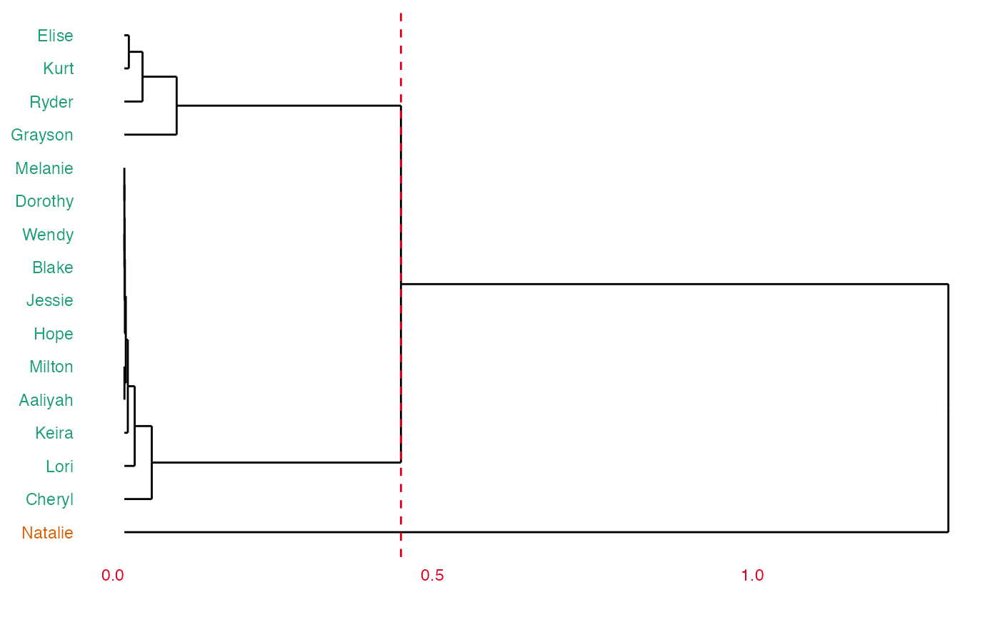
(reg_clu <- cutree(reg_res, 2))
#> Malachi Mia Jessica Marianne Nora Archie Shawn Eva
#> 1 1 1 1 1 1 1 1
#> Rickey Otto Carrie Gregory Ernest Cassandra Bill Chase
#> 1 1 1 1 1 1 1 2
m182_task <- m182_task %>% as_tidygraph() %>% mutate(regclu = reg_clu)
autographr(m182_task, node_color = "regclu") + ggtitle("Task")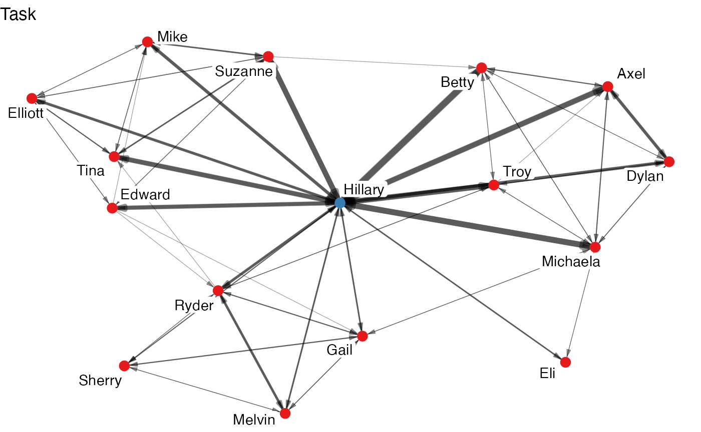
Blockmodelling
As before, we can use these clusters to blockmodel the task network.
(task_blockmodel <- blockmodel(m182_task, reg_clu))
#>
#> Network Blockmodel:
#>
#> Block membership:
#>
#> Malachi Mia Jessica Marianne Nora Archie Shawn Eva
#> 1 1 1 1 1 1 1 1
#> Rickey Otto Carrie Gregory Ernest Cassandra Bill Chase
#> 1 1 1 1 1 1 1 2
#>
#> Reduced form blockmodel:
#>
#> Malachi Mia Jessica Marianne Nora Archie Shawn Eva Rickey Otto Carrie Gregory Ernest Cassandra Bill Chase
#> Block 1 Block 2
#> Block 1 0.1357143 3.11
#> Block 2 3.1500000 NaN
plot(task_blockmodel)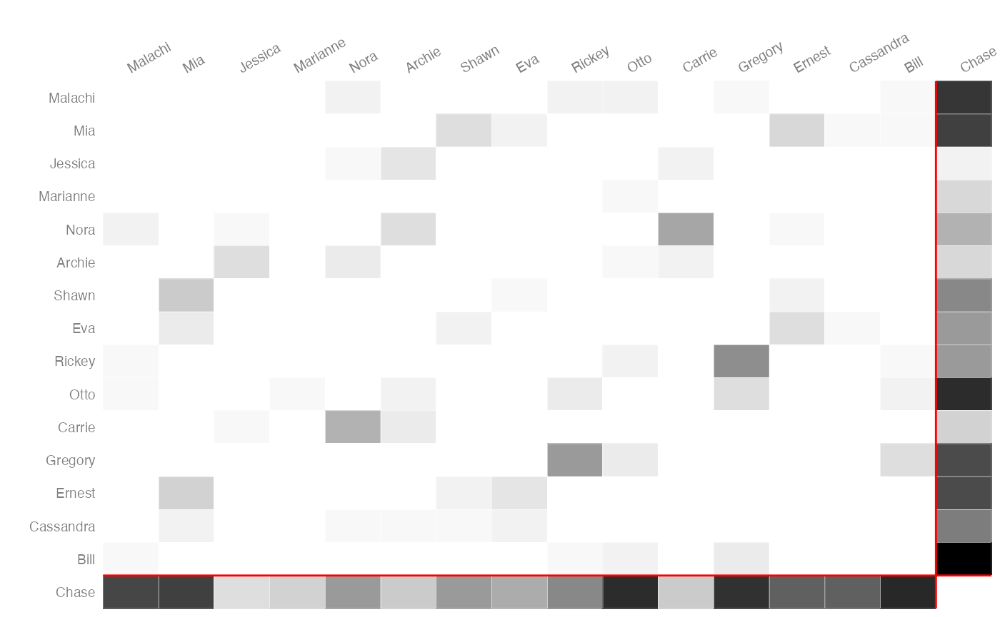
Reduced graph
Finally, we can reduce the graph to just interactions between roles. Obviously this is not particularly informative with only two clusters though…
(task_reduced <- reduce_graph(task_blockmodel, c("Regulars","Geek")))
#> IGRAPH 02da0d6 DNW- 2 3 --
#> + attr: name (v/c), weight (e/n)
#> + edges from 02da0d6 (vertex names):
#> [1] Regulars->Regulars Regulars->Geek Geek ->Regulars
autographr(task_reduced)Finally, we can try to get a sense of what our different clusters represent by generating a cluster-by-triad-type matrix. This is an m x n matrix, where m is the number of clusters and n is the 16 possible triad types. Each cell is the average number of the given triad type for each individual in the cluster:
group_triad_census(m182_task, reg_clu)
#> 003 012 102 021D 021U 021C 111D 111U 030T 030C 201 120D 120U 120C
#> Block 1 78.13 3.27 19.8 0 0 0 0.53 0.2 0 0 0.73 0.07 0 0
#> Block 2 0.00 0.00 0.0 0 0 0 0.00 0.0 0 0 73.00 0.00 0 0
#> 210 300
#> Block 1 0.6 1.67
#> Block 2 6.0 26.00# ADVANCED: Note that we can also blockmodel our communities from last week.
# walktrap_blockmodel <- blockmodel(get.adjacency(m182_main, sparse = F),
# friend_wt$membership)
# plot(walktrap_blockmodel)
# walktrap_blockmodel
# # And graphs that from the reduced form blockmodels...
# walktrap_blockmodel_red <- graph.adjacency(walktrap_blockmodel$block.model, weighted = T)
# plot(walktrap_blockmodel_red, edge.width = E(walktrap_blockmodel_red)$weight,
# vertex.color = rainbow(2) )
# # Admittedly, not terribly interesting...
#
# edgebet_blockmodel <- blockmodel(get.adjacency(m182_main, sparse = F),
# friend_eb$membership)
# plot(edgebet_blockmodel) # blockmodel
# edgebet_blockmodel_red <- graph.adjacency(edgebet_blockmodel$block.model, weighted = T)
# plot(edgebet_blockmodel_red, edge.width=E(edgebet_blockmodel_red)$weight,
# vertex.color=rainbow(3) ) # reduced graph
# # Cool
#
# fastgreed_blockmodel <- blockmodel(get.adjacency(m182_main, sparse = F),
# friend_fg$membership)
# plot(fastgreed_blockmodel) # blockmodel
# fastgreed_blockmodel_red <- graph.adjacency(fastgreed_blockmodel$block.model, weighted = T)
# plot(fastgreed_blockmodel_red, edge.width=E(fastgreed_blockmodel_red)$weight,
# vertex.color=rainbow(3) ) # reduced graphUnit Test
- Visualise the m182 FRIENDSHIP network, sizing the vertices by constraint and identifying the structural hole What would being in a structural hole mean here?
- Plot labelled, reduced graph of REGULARLY equivalent classes on friendship network only
- Plot labelled, reduced graph of STRUCTURALLY equivalent classes on task network only